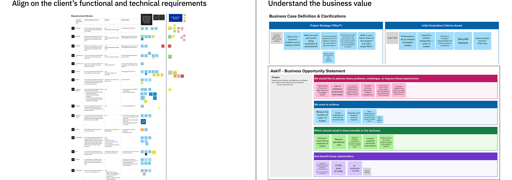
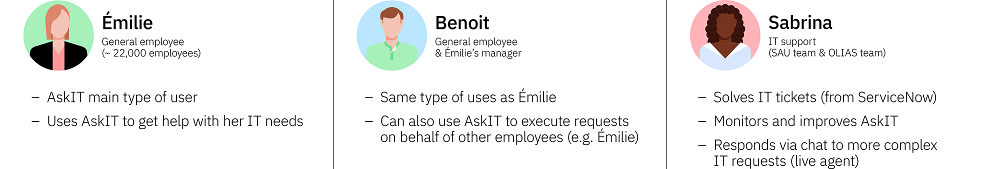
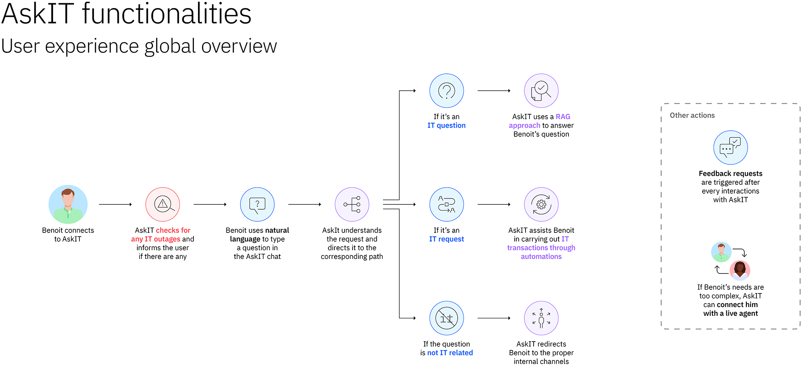
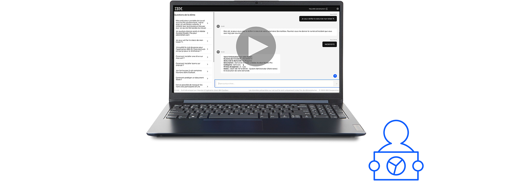
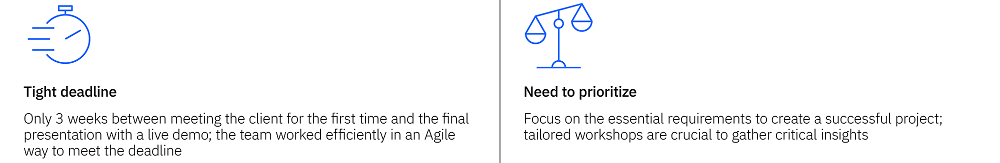

AI Agent for IT Helpdesk
An AI-powered agent for internal IT transactions.
Summary
A large North American financial institution sought to enhance its internal IT transaction system using AI. IBM and another competitor were invited to develop a proof of concept within three weeks, based on a list of 15 technical and functional requirements. The project concluded with a live demo presentation, and our solution was selected as the preferred option for further exploration at a larger scale.
My Role
Led requirement analysis and scoping through workshops, developed user flows that integrate multiple systems and technologies to showcase the value of the solution, built and validated the solution by using the tool’s low-code / no-code capabilities, tested and validated the various user scenarios for the demo, and contributed to experience design and narrative framing to support business goals
Tools
Mural, Figma, monday.com, watsonx.ai (genarative AI studio), watsonx Orchestrate (generative AI & Automation solution), Adobe Creative Cloud, Microsoft 365, Slack
Context & Brief
In July 2024, a large North American financial institution sought to modernize its internal IT transaction system with AI agent capabilities. As part of an evaluation process comparing multiple vendors, a functional proof of concept was requested. The scope involved designing and delivering a working demo aligned with 15 specific requirements within a three-week timeframe. The goal was to showcase how an AI agent could improve user experience, automate common transactions, and support multiple IT helpdesk workflows.
Research & use case discovery
Define the client's requirements & business context
The project began with a review of the client’s 15 requirements, many of which were initially ambiguous or open to interpretation. To quickly align expectations and uncover the business value behind the initiative, a focused 45-minute workshop was designed and facilitated. Despite the tight time constraint, the session successfully clarified the requirements, prioritized them based on impact, and captured all the critical insights needed to define the scope and guide the solution design.
Design & scope the solution
Develop a narrative
To move beyond a checklist-style validation, a storytelling approach was developed and shared with the client. The 15 requirements were grouped into three functional categories:
- Grounded question answering (knowledge catalog queries)
- Guided conversations (structured, scenario-based interactions)
- Transactional capabilities and automations (integration with tools like Outlook and ServiceNow)
{kind=link}
{kind=link}
{kind=link}
Scoping the solution
A quick 30-minute workshop to present this framework to the client and align ourselves on the scope of the proof of concept was then conducted. During this session, the client priorities were reviewed, and decisions were made regarding the specific system integrations and datasets needed for the project.
Some requirements, however, could not be completed within the limited timeframe. These constraints were addressed openly, with clear explanations provided to ensure the client understood the reasons behind any omissions. Maintaining transparency throughout the process helped build trust and keep the project aligned with client expectations.
Co-create the solution
Create personas
Following the scoping and alignment work, three core workflows were defined to showcase how the solution would function across different user roles. To bring these workflows to life and ground them in realistic use cases, three personas were created:

These personas helped structure the user experience around familiar roles and made it easier to demonstrate the AI agent’s impact across various interactions and approval flows.
Design the user experience
User workflows were designed around the three functional categories defined earlier (grounded question answering, guided conversations, and transactional capabilities) to create a cohesive narrative that reflected realistic use cases. Rather than designing separate flows for each persona, the goal was to craft unified scenarios that illustrated how different user types would interact with the AI solution within each functional area. Personas were embedded within these narratives to provide context and relevance. The workflows were refined through an iterative design process, in close collaboration with technical stakeholders, to ensure that the proposed interactions were both compelling and feasible given system constraints.
{kind=link}
{kind=link}
{kind=link}
Build & plan the demo
The proof of concept was built to reflect the previously defined user workflows, using an Agile methodology to ensure flexibility and alignment throughout the process. Specific user stories were created to guide development and keep all contributors focused on delivering a cohesive and technically feasible experience. Logical and realistic question flows were designed to support each scenario, carefully chosen to resonate with the client and align with broader business objectives. In parallel, a video version of the demo was produced by combining to serve as a reusable asset for future presentations and client engagements.
Present & deliver the proof of concept
Project delivery & outcomes
The final presentation included a walkthrough of user scenarios, rationale behind design choices, and a live demonstration. During the demo, the system unexpectedly crashed. However, the prepared video allowed the demonstration to continue without loss of content. The client responded positively, noting the clarity provided by the narrative framing and expressing interest in continuing with further evaluation at scale.
Learnings
Successfully delivering a complex, AI-powered proof of concept in just three weeks required a disciplined approach to scoping, prioritization, and communication. Early workshops helped surface the most critical requirements, enabling focused design and development efforts. By framing the solution through narrative and personas, the concept became easier to understand and more engaging for stakeholders. Transparent communication about constraints ensured trust, even when all requirements couldn’t be met. Ultimately, the project demonstrated that a lean, narrative-driven approach, grounded in strategic prioritization and cross-functional alignment, can lead to meaningful outcomes, even under tight deadlines.
